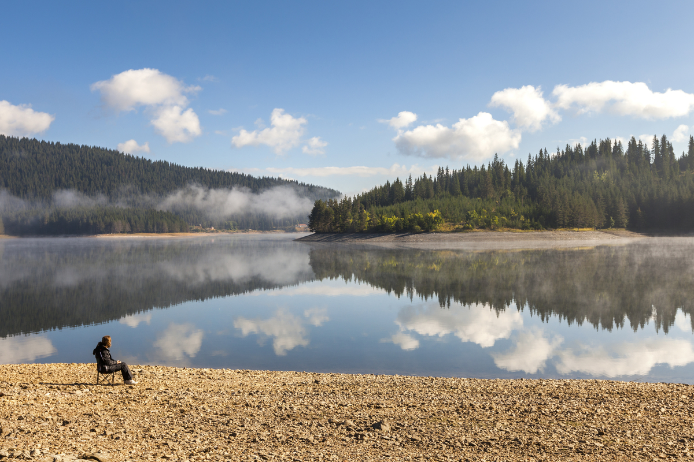
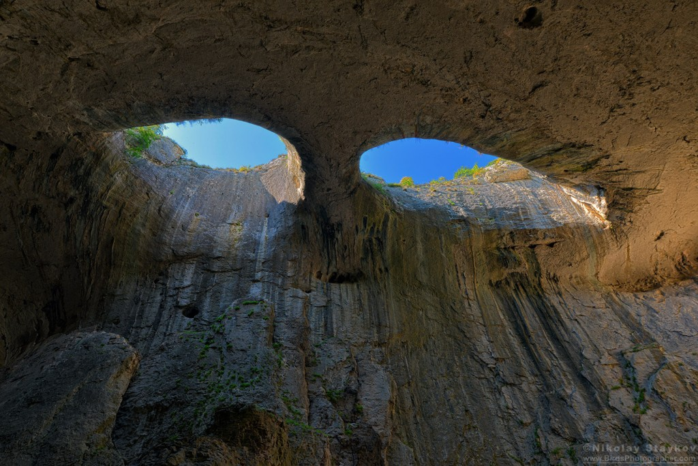
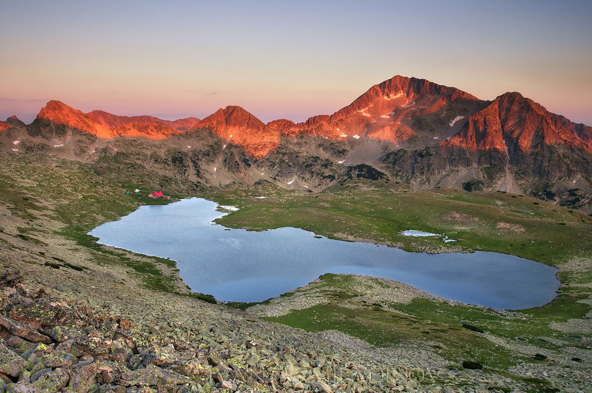
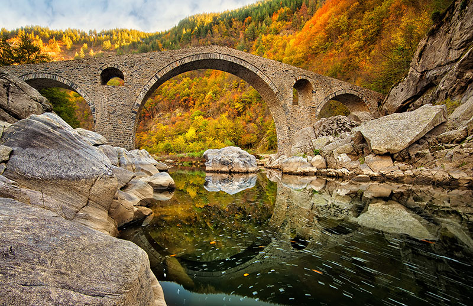
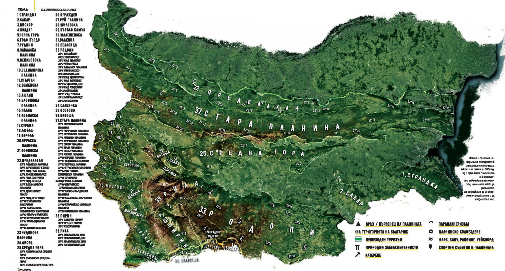

ПЛАНИНИТЕ НА БЪЛГАРИЯ
Българските планини са сравнително млади. Повечето принадлежат на геоложкия масив Балканиди, който е част от Алпо-Хималайската планинска верига. Последната се смята за най-младо формираната на земята, в последните 145 млн години, като процесът на формиране е приключил преди около 2 млн години. Това означава, че планините ни са набори с епичните Хималаи.
За релефа на Балканския полуостров могат да се разкажат още много интригуващи истории. Една друга такава, че днешните форми са се издигнали от дъното на гигантски океан, познат под името Тетис, заедно с всички други южни части на сегашния континент Европа и югозападни на континента Азия. Това до някаква степен обяснява и геоложката връзка между Балканидите и азиатските планини. Но Балканидите не са единствената обособена геоложка структура, обуславяща релефа на България. Към тях се добавят Краищидите и Македоно-Тракийския планински масив.
Различията в релефа в отделни части на държавата ни са резултат не само от действието на вътрешните земни сили, но и от тези на локалната метеорология – или външните земни сили, които включват температура, валежи, води, ледници, вятър и други.
Какво е значението на планините за човека? Каква е разликата дали ще живеем в равнинен район или планинска земя? Предимствата, с които е свързана планината, са много – те могат да бъдат икономирески, социални и индивидуални. Ние ще се спрем на няколко. На първо четене стои охранителната им функция, обусловена от тяхната труднодостъпност. Пример може да се даде с българските планини, които са съхранили част от вековни гори, дали местообитание на рядък животински и растителен свят. Планинският пояс генерира голяма част от питейната вода, която ползва човечеството и която му се доставя чрез големите реки. Горите отново се намесват тук със своята водоохранна функция, регулират количеството и състава на водните басейни. Планините осигуряват “бягство” от топлия климат, мръсния въздух и градския шум. Не на последно място, планините възпитават в издръжливост, смелост и идеализъм.
Заключено е, България е планинска държава. Пише го в учебниците по география и твърдението се ползва широко от хора и организации в различни сфери. Както казахме по-рано, само 30% от територията на страната е заета от същински планини. А каква е бройката им? За някои хора те са пет – Рила, Пирин, Родопи, Стара планина и Витоша. За други са 37 (теза, която преброява 23 малки планини на малката територия, обединила местностите Краище и Западно Средногорие). Задълбочавайки се в релефа и топонимите в държавата ни, могат да се преброят дори повече от 100 български планини. Тази голяма бройка се дължи най-вече на многобройните дялове на Стара планина (верижна планина) и Родопи (разчленена планина), всеки един от които носи собствено име. Тези имена не са масово известни, но са названията, които се ползват сред локалното население. Това само по себе си, по наше мнение, е достатъчно да създаде индивидуален облик на тези планински дялове и да им препише лични истории.
Ако решите да катерите първенците на тези сравнително малки планини (установен е всеки един), на много от тях ще откриете паметници или други маркировки, които да потвърдят вашето планинарско постижение. Повечето от тези върхове ще ви позволят да зареете поглед над многобройни хълмове и да погледнете родината отгоре. До някои може да се наложи да търсите сами пътя. Някои от тях може би са ви познати много добре, за други – може и да не сте чували. Постарахме се да подберем всичко най-интересно за всяка една от тях – защитените местности, вековните гори, природните забележителности, спортните мероприятия и обекти… всичко онова, с което да ви вдъхновим да прекарате едно лято по планинските била и хълмове на България. Не забравяйте после и да ни споделите всичко, което научите по пътя за планините на България!
| Планина | Връх | Метри |
| Рила | Мусала | 2925 |
| Пирин | Вихрен | 2914 |
| Стара планина | Ботев | 2376 |
| Виотша | Черни връх | 2290 |
| Осогово | Руен | 2251 |
| Славяанка | Гоцев връх | 2212 |
| Родопи | Голям Перелик | 2191 |
| Беласица | Радомир | 2029 |
| Влахина | Кадийца | 1924 |
| Малашевска планина | Ильов връх | 1803 |
| Кървав камък | Било | 1737 |